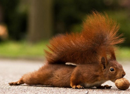
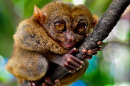

Moje ulubione zwierzęta

Kocham wszystkie zwierzęta – no może poza wężami, pająkami, kleszczami i pozostałymi
gadami i owadami. Kocham wszystkie zwierzęta – no może poza wężami, pająkami,
kleszczami i pozostałymi gadami i owadami. Kocham wszystkie zwierzęta – no może poza
wężami, pająkami, kleszczami i pozostałymi gadami i owadami. Kocham wszystkie
zwierzęta – no może poza wężami, pająkami, kleszczami i pozostałymi gadami i owadami.
Kocham wszystkie zwierzęta – no może poza wężami, pająkami, kleszczami i pozostałymi
gadami i owadami. Kocham wszystkie zwierzęta – no może poza wężami, pająkami,
kleszczami i pozostałymi gadami i owadami. Kocham wszystkie zwierzęta – no może poza
wężami, pająkami, kleszczami i pozostałymi gadami i owadami.

Strona wykona przez – Kacper Graffon